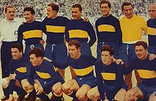
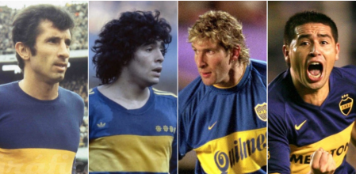
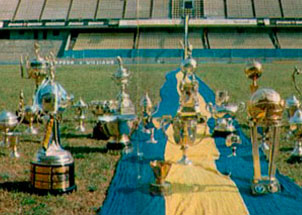
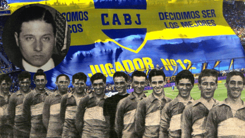
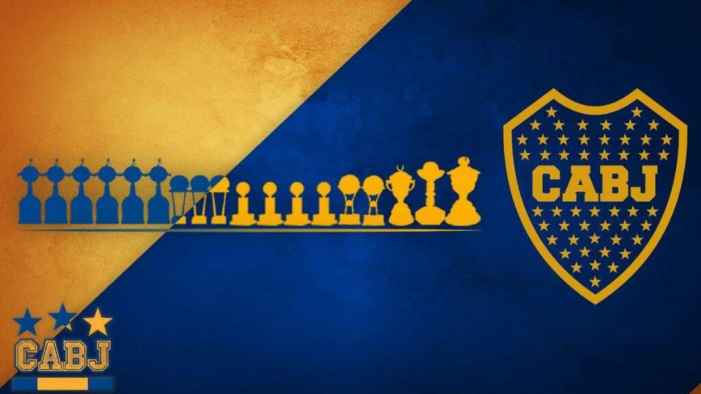

El Club Atlético Boca Juniors, conocido popularmente como Boca Juniors o simplemente Boca, es uno de los clubes de fútbol más emblemáticos y exitosos de Argentina y del mundo. Su historia se remonta al 3 de abril de 1905, cuando un grupo de jóvenes del barrio La Boca en Buenos Aires se reunió para fundar el club.
A lo largo de su historia, Boca Juniors ha experimentado numerosos éxitos y ha tenido un gran impacto en la escena del fútbol argentino e internacional. Algunos momentos clave en la historia del club incluyen:
Fundación y primeros años: Boca Juniors fue fundado por cinco jóvenes italianos en la calle Tacuarí en La Boca. Los colores del club, azul y amarillo, se inspiraron en la bandera de un barco sueco que pasó por el puerto de Buenos Aires en ese momento.
Ascenso y primer título: Boca Juniors comenzó en las divisiones inferiores del fútbol argentino y ascendió a la Primera División en 1913. En 1919, ganaron su primer título de liga.
La era de la Bombonera: En 1940, Boca Juniors se mudó al estadio La Bombonera, que se convertiría en su hogar emblemático y uno de los estadios más famosos del mundo.
Época dorada: Durante la década de 1970, Boca Juniors vivió una época dorada bajo la dirección técnica de César Luis Menotti y otros entrenadores. El club ganó varios campeonatos locales e internacionales, incluyendo la Copa Libertadores.
Rivalidad con River Plate: El partido entre Boca Juniors y River Plate, conocido como el Superclásico, es uno de los enfrentamientos de fútbol más intensos y emocionantes del mundo. Esta rivalidad se ha mantenido durante décadas y ha producido momentos inolvidables en la historia del fútbol.
Éxito internacional: Boca Juniors ha ganado la Copa Libertadores en varias ocasiones, consolidándose como uno de los equipos más exitosos de América del Sur. También ha tenido éxitos en competiciones internacionales como la Copa Intercontinental y la Supercopa Sudamericana.
Figuras emblemáticas: A lo largo de su historia, Boca Juniors ha tenido numerosas estrellas en su plantel, incluyendo a Diego Maradona, Juan Román Riquelme, Carlos Tevez, Martín Palermo y muchos otros.
Actualidad: A medida que avanzamos hacia 2023, Boca Juniors continúa siendo uno de los equipos más poderosos de Argentina y sigue compitiendo en torneos locales e internacionales.
Boca Juniors es conocido por su apasionada base de seguidores, su estilo de juego agresivo y su historia rica en éxitos. El club ha dejado una huella indeleble en el fútbol argentino y mundial, y su legado perdurará por muchas generaciones más




El palmarés del Club Atlético Boca Juniors lo convierte en el club más ganador de toda la historia del fútbol argentino, sumando títulos nacionales e internacionales y el más ganador de América. En el ámbito local es el segundo club en cantidad de títulos de liga, con 35 conquistas solo detrás de River Plate el cual posee 37 consagraciones. Así mismo posee un total de 16 copas nacionales, siendo el máximo campeón de este tipo de competencias. En el ámbito internacional es el club de Argentina y de América que más títulos internacionales junto con Independiente ha conquistado con 18 consagraciones (18 UEFA/CONMEBOL). A nivel continental está segundo en la conquista de la CONMEBOL Libertadores con 6 títulos detrás de Independiente que posee 7 títulos en la máxima competición a nivel clubes de Sudamérica.

Apodo: Boca Juniors es comúnmente conocido como "Boca". Además, sus seguidores son apodados "Xeneizes", un término que se refiere a los inmigrantes genoveses que fundaron el club en el barrio de La Boca.
Estadio: El estadio de Boca Juniors se llama "La Bombonera". Es uno de los estadios más icónicos y ruidosos del mundo. Su nombre oficial es el Estadio Alberto J. Armando, en honor a un expresidente del club.
Colores: Los colores característicos de Boca Juniors son el azul y el amarillo. La elección de estos colores se basó en la bandera de un barco sueco que pasaba por el puerto de Buenos Aires en el momento de la fundación del club.
Hinchada: Boca Juniors tiene una de las hinchadas más apasionadas y leales del mundo. Los aficionados son conocidos por su fervor y su capacidad para crear un ambiente increíble en La Bombonera durante los partidos.
Rivalidad con River Plate: El enfrentamiento entre Boca Juniors y River Plate, conocido como el "Superclásico", es uno de los derbis de fútbol más intensos y famosos del mundo. Los partidos entre estos dos equipos generan una gran expectación y emoción en todo el país y en el extranjero.
Época dorada de los 2000: Durante la década de 2000, Boca Juniors vivió una etapa de gran éxito bajo la dirección técnica de Carlos Bianchi y con jugadores emblemáticos como Juan Román Riquelme, Martín Palermo y Carlos Tevez. El club ganó múltiples títulos nacionales e internacionales en ese período.
Museo y Tour: Boca Juniors ofrece a los visitantes la oportunidad de recorrer su museo, donde se exhiben trofeos, camisetas históricas y otros objetos relacionados con la historia del club. También se pueden realizar tours por La Bombonera para conocer más sobre su rica historia.
Canción emblemática: La canción "La Bombonera no tiembla, late" es un himno que resuena en el estadio durante los partidos y representa la pasión y el orgullo de los seguidores de Boca Juniors.
Participación en Copas Internacionales: Boca Juniors ha tenido un éxito significativo en competiciones internacionales como la Copa Libertadores, la Copa Sudamericana y la Copa Intercontinental, lo que ha contribuido a su prestigio a nivel mundial.
Figuras icónicas: A lo largo de su historia, el club ha tenido numerosos jugadores y entrenadores icónicos, como Diego Maradona, Juan Román Riquelme, Martín Palermo, Carlos Tevez, Guillermo Barros Schelotto y muchos otros.
Boca Juniors es un club con una historia rica y una base de seguidores apasionada que lo ha convertido en uno de los clubes de fútbol más reconocidos y admirados del mundo. Su legado en la historia del fútbol argentino e internacional es innegable.